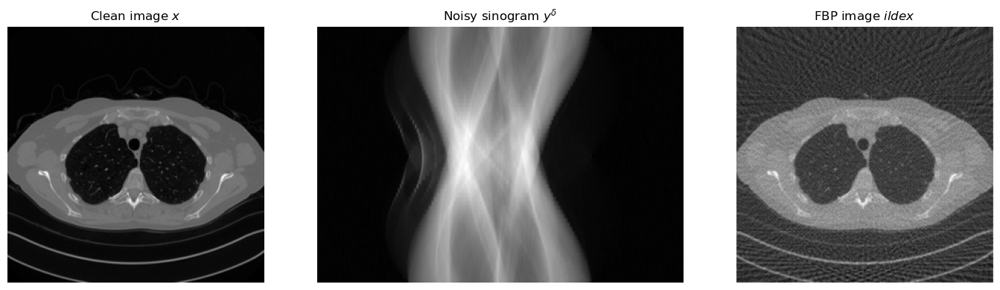
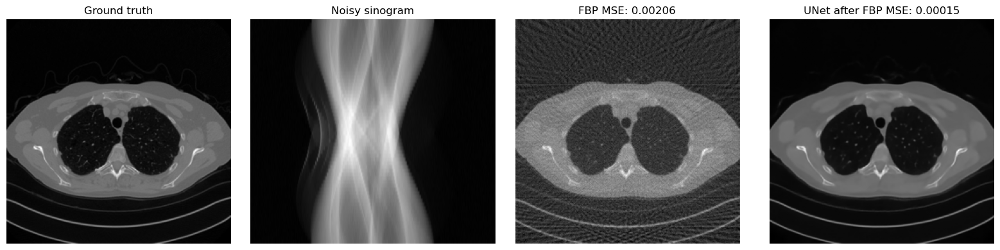
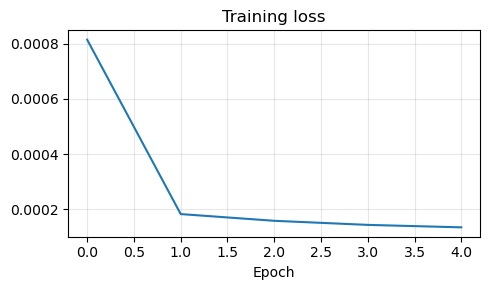
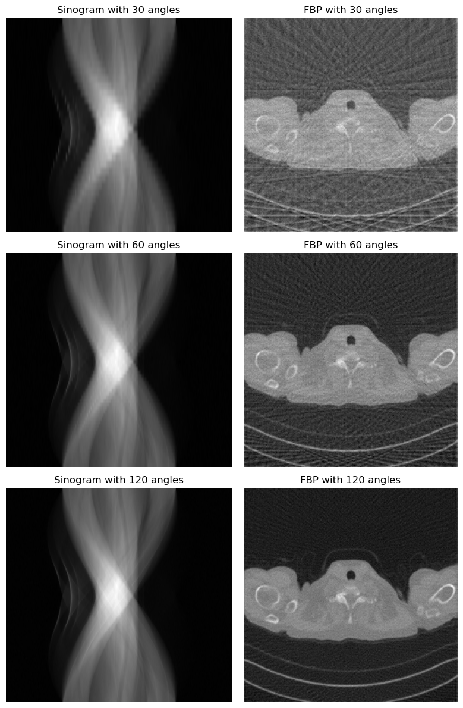

Cross-Domain End-to-End Reconstruction#
So far, the end-to-end models discussed in this chapter have all assumed that the input measurement \(y^\delta\) and the target image \(x\) live on the same spatial grid. This is the case, for example, in denoising and deblurring: the corrupted image and the reconstruction are both images, so a CNN or a UNet can process the input directly [25, 33].
Many inverse problems do not have this structure. In Computed Tomography (CT), for instance, the measurement is a sinogram, while the desired output is an image. The input and the output therefore have different dimensions, different geometry, and different semantics. This is the typical setting of a cross-domain inverse problem.
The goal of this notebook is to explain why this mismatch matters, why a naive direct CNN from sinogram to image is usually a poor idea, and how one can still build an effective reconstruction pipeline by combining a classical reconstruction operator with a neural network [1, 3].

Why Same-Domain Architectures Become Mismatched#
CNNs and UNets are built around local convolutions acting on regular image grids [25, 33]. This is exactly what makes them effective in image-to-image reconstruction: locality is meaningful, translation-equivariant processing is natural, and the network can progressively refine the corrupted image.
In CT, however, the measurement model
maps an image \(x\) to a sinogram \(y\) whose entries are line integrals. Each sinogram value depends on many pixels of the unknown image, and each image pixel contributes to many detector-angle pairs. The relation between the two domains is therefore highly non-local.
This is the first key message of the cross-domain setting: even if an architecture works very well in the image domain, it may become badly matched to the problem if the measurement lives in a completely different domain.

Why Resizing the Measurement Is Usually Not Enough#
A tempting workaround is to resize the sinogram so that it has the same shape as the target image and then feed it to a CNN or a UNet. This may make the tensor shapes compatible, but it does not solve the real problem.
The issue is not only dimensional. Resizing changes the array shape, but it does not restore the correct spatial meaning of the data. Two neighboring detector bins in a sinogram are not equivalent to two neighboring pixels in an image, and a translation in the sinogram domain does not correspond to a translation of the object in any simple way. The inductive bias of a convolutional image model therefore remains poorly aligned with the task.
For this reason, cross-domain reconstruction usually requires a first step that maps the measurement back into the image domain before the neural network is applied.
Preprocessing via Filtered Backprojection#
A classical solution is to introduce a fast preprocessing operator that maps the noisy measurement \(y^\delta\) into a crude image-domain estimate \(\tilde{x}\). In CT, the standard choice is Filtered Backprojection (FBP), followed by a learned post-processing network in many hybrid pipelines [3, 20]:
The role of this step is not to solve the inverse problem perfectly. Its main purpose is to bridge the domain gap. Once the data have been mapped back into the image domain, a CNN or a UNet can operate on an object with the correct geometry and spatial interpretation.
This leads to the hybrid pipeline
In this architecture, the analytical operator handles the conversion between domains, while the neural network acts as a learned post-processing step that suppresses artifacts and restores details.
import glob
import sys
from pathlib import Path
import matplotlib.pyplot as plt
import numpy as np
import torch
from PIL import Image
from torch.utils.data import DataLoader, Dataset
from torchvision import transforms
from tqdm.auto import tqdm
sys.path.append('..')
from IPPy import operators, utilities
book_root = Path('..').resolve()
weights_dir = book_root / 'weights'
weights_dir.mkdir(exist_ok=True)
class MayoDataset(Dataset):
def __init__(self, data_path, data_shape=256):
super().__init__()
self.fname_list = sorted(glob.glob(f'{data_path}/*/*.png'))
self.transform = transforms.Compose([
transforms.ToTensor(),
transforms.Resize((data_shape, data_shape)),
])
def __len__(self):
return len(self.fname_list)
def __getitem__(self, idx):
x = Image.open(self.fname_list[idx]).convert('L')
return self.transform(x)
device = utilities.get_device()
train_dataset = MayoDataset(data_path=str(book_root / 'Mayo' / 'train'), data_shape=256)
test_dataset = MayoDataset(data_path=str(book_root / 'Mayo' / 'test'), data_shape=256)
train_loader = DataLoader(train_dataset, batch_size=4, shuffle=True)
test_loader = DataLoader(test_dataset, batch_size=4, shuffle=False)
K = operators.CTProjector(
img_shape=(256, 256),
angles=np.linspace(0, np.pi, 60, endpoint=False),
det_size=512,
geometry='parallel',
)
print('Device:', device)
print('Training images:', len(train_dataset))
print('Test images:', len(test_dataset))
print('Weights directory:', weights_dir)
CUDA not available. CTProjector will use CPU.
Attempting to create ASTRA projector type: 'linear' for 'parallel' geometry...
Successfully created ASTRA projector type: 'linear'
CTProjector initialized. Geometry: parallel. Using GPU: False. FBP Algorithm: FBP
Device: cpu
Training images: 3306
Test images: 327
Weights directory: C:\Users\tivog\computational-imaging\years\2025-26\weights
Looking at the Three Objects: \(x\), \(y^\delta\), and \(\tilde{x}\)#
Before training any model, it is useful to inspect the full pipeline on a single example. Starting from a clean image \(x\), we first generate a sinogram \(y = Kx\), then add noise to obtain \(y^\delta\), and finally compute the FBP reconstruction \(\tilde{x} = \operatorname{FBP}(y^\delta)\).
This simple experiment already explains the role of the neural network. The clean image and the FBP reconstruction both live in the image domain, but \(\tilde{x}\) contains streaking artifacts and loss of detail. The network is therefore asked to learn an image-to-image correction problem, which is much better matched to a UNet than a direct sinogram-to-image mapping.
torch.manual_seed(0)
x_example = test_dataset[0].unsqueeze(0).to(device)
with torch.no_grad():
y_example = K(x_example)
y_delta_example = y_example + utilities.gaussian_noise(y_example, noise_level=0.01)
x_fbp_example = K.FBP(y_delta_example)
plt.figure(figsize=(15, 4))
plt.subplot(1, 3, 1)
plt.imshow(x_example.cpu().squeeze(), cmap='gray')
plt.title('Clean image $x$')
plt.axis('off')
plt.subplot(1, 3, 2)
plt.imshow(y_delta_example.cpu().squeeze(), cmap='gray', aspect='auto')
plt.title('Noisy sinogram $y^\delta$')
plt.axis('off')
plt.subplot(1, 3, 3)
plt.imshow(x_fbp_example.cpu().squeeze(), cmap='gray')
plt.title('FBP image $\tilde{x}$')
plt.axis('off')
plt.tight_layout()
plt.show()

A Cross-Domain UNet Pipeline#
Once the FBP step has been introduced, the training strategy becomes very similar to the image-to-image setting studied in the previous notebooks. Given clean images \(\{x_i\}_{i=1}^N\), we generate synthetic noisy measurements
compute the corresponding image-domain inputs
and train the network by minimizing
The key point is that the neural network is not asked to invert the tomographic operator directly. Instead, it learns how to improve a coarse reconstruction that already lives in the correct domain.
To keep the implementation explicit, we will again use a plain UNet similar to the one introduced in the previous notebook.
import torch
from torch import nn
class DoubleConv(nn.Module):
def __init__(self, in_ch, out_ch):
super().__init__()
self.block = nn.Sequential(
nn.Conv2d(in_ch, out_ch, kernel_size=3, padding=1),
nn.ReLU(),
nn.Conv2d(out_ch, out_ch, kernel_size=3, padding=1),
nn.ReLU(),
)
def forward(self, x):
return self.block(x)
class DownBlock(nn.Module):
def __init__(self, in_ch, out_ch):
super().__init__()
self.pool = nn.MaxPool2d(2)
self.block = DoubleConv(in_ch, out_ch)
def forward(self, x):
return self.block(self.pool(x))
class UpBlock(nn.Module):
def __init__(self, in_ch, skip_ch, out_ch):
super().__init__()
self.up = nn.ConvTranspose2d(in_ch, out_ch, kernel_size=2, stride=2)
self.block = DoubleConv(out_ch + skip_ch, out_ch)
def forward(self, x, skip):
x = self.up(x)
if x.shape[-2:] != skip.shape[-2:]:
x = torch.nn.functional.interpolate(x, size=skip.shape[-2:], mode='bilinear', align_corners=False)
x = torch.cat([skip, x], dim=1)
return self.block(x)
class SimpleUNet(nn.Module):
def __init__(self, in_ch=1, out_ch=1, base_ch=32):
super().__init__()
self.enc1 = DoubleConv(in_ch, base_ch)
self.enc2 = DownBlock(base_ch, 2 * base_ch)
self.enc3 = DownBlock(2 * base_ch, 4 * base_ch)
self.bottleneck = DownBlock(4 * base_ch, 8 * base_ch)
self.dec3 = UpBlock(8 * base_ch, 4 * base_ch, 4 * base_ch)
self.dec2 = UpBlock(4 * base_ch, 2 * base_ch, 2 * base_ch)
self.dec1 = UpBlock(2 * base_ch, base_ch, base_ch)
self.out_conv = nn.Conv2d(base_ch, out_ch, kernel_size=1)
def forward(self, x):
s1 = self.enc1(x)
s2 = self.enc2(s1)
s3 = self.enc3(s2)
h = self.bottleneck(s3)
h = self.dec3(h, s3)
h = self.dec2(h, s2)
h = self.dec1(h, s1)
return self.out_conv(h)
model = SimpleUNet(in_ch=1, out_ch=1, base_ch=32)
print(model)
SimpleUNet(
(enc1): DoubleConv(
(block): Sequential(
(0): Conv2d(1, 32, kernel_size=(3, 3), stride=(1, 1), padding=(1, 1))
(1): ReLU()
(2): Conv2d(32, 32, kernel_size=(3, 3), stride=(1, 1), padding=(1, 1))
(3): ReLU()
)
)
(enc2): DownBlock(
(pool): MaxPool2d(kernel_size=2, stride=2, padding=0, dilation=1, ceil_mode=False)
(block): DoubleConv(
(block): Sequential(
(0): Conv2d(32, 64, kernel_size=(3, 3), stride=(1, 1), padding=(1, 1))
(1): ReLU()
(2): Conv2d(64, 64, kernel_size=(3, 3), stride=(1, 1), padding=(1, 1))
(3): ReLU()
)
)
)
(enc3): DownBlock(
(pool): MaxPool2d(kernel_size=2, stride=2, padding=0, dilation=1, ceil_mode=False)
(block): DoubleConv(
(block): Sequential(
(0): Conv2d(64, 128, kernel_size=(3, 3), stride=(1, 1), padding=(1, 1))
(1): ReLU()
(2): Conv2d(128, 128, kernel_size=(3, 3), stride=(1, 1), padding=(1, 1))
(3): ReLU()
)
)
)
(bottleneck): DownBlock(
(pool): MaxPool2d(kernel_size=2, stride=2, padding=0, dilation=1, ceil_mode=False)
(block): DoubleConv(
(block): Sequential(
(0): Conv2d(128, 256, kernel_size=(3, 3), stride=(1, 1), padding=(1, 1))
(1): ReLU()
(2): Conv2d(256, 256, kernel_size=(3, 3), stride=(1, 1), padding=(1, 1))
(3): ReLU()
)
)
)
(dec3): UpBlock(
(up): ConvTranspose2d(256, 128, kernel_size=(2, 2), stride=(2, 2))
(block): DoubleConv(
(block): Sequential(
(0): Conv2d(256, 128, kernel_size=(3, 3), stride=(1, 1), padding=(1, 1))
(1): ReLU()
(2): Conv2d(128, 128, kernel_size=(3, 3), stride=(1, 1), padding=(1, 1))
(3): ReLU()
)
)
)
(dec2): UpBlock(
(up): ConvTranspose2d(128, 64, kernel_size=(2, 2), stride=(2, 2))
(block): DoubleConv(
(block): Sequential(
(0): Conv2d(128, 64, kernel_size=(3, 3), stride=(1, 1), padding=(1, 1))
(1): ReLU()
(2): Conv2d(64, 64, kernel_size=(3, 3), stride=(1, 1), padding=(1, 1))
(3): ReLU()
)
)
)
(dec1): UpBlock(
(up): ConvTranspose2d(64, 32, kernel_size=(2, 2), stride=(2, 2))
(block): DoubleConv(
(block): Sequential(
(0): Conv2d(64, 32, kernel_size=(3, 3), stride=(1, 1), padding=(1, 1))
(1): ReLU()
(2): Conv2d(32, 32, kernel_size=(3, 3), stride=(1, 1), padding=(1, 1))
(3): ReLU()
)
)
)
(out_conv): Conv2d(32, 1, kernel_size=(1, 1), stride=(1, 1))
)
Training the Cross-Domain UNet#
The code below implements the full training loop. At each iteration we:
load a clean image \(x\);
generate the sinogram \(y = Kx\);
add noise to obtain \(y^\delta\);
reconstruct a coarse image \(\tilde{x} = \operatorname{FBP}(y^\delta)\);
feed \(\tilde{x}\) to the UNet;
compare the prediction with the clean target \(x\) using
MSELoss.
This is still an end-to-end supervised pipeline, but the analytical preprocessing step is now essential because it bridges the gap between measurement space and image space.
torch.manual_seed(0)
model = SimpleUNet(in_ch=1, out_ch=1, base_ch=32).to(device)
optimizer = torch.optim.Adam(model.parameters(), lr=1e-3)
loss_fn = nn.MSELoss()
num_epochs = 5
noise_level = 0.01
history = []
weights_path = weights_dir / 'CTUNet.pth'
for epoch in range(num_epochs):
model.train()
epoch_loss = 0.0
progress_bar = tqdm(train_loader, desc=f'Epoch {epoch + 1}/{num_epochs}', leave=True)
for step, x_batch in enumerate(progress_bar, start=1):
x_batch = x_batch.to(device)
with torch.no_grad():
y_batch = K(x_batch)
y_batch = y_batch + utilities.gaussian_noise(y_batch, noise_level=noise_level)
x_fbp = K.FBP(y_batch)
x_pred = model(x_fbp)
loss = loss_fn(x_pred, x_batch)
optimizer.zero_grad()
loss.backward()
optimizer.step()
epoch_loss += loss.item()
progress_bar.set_postfix(batch_loss=f'{loss.item():.6f}', avg_loss=f'{epoch_loss / step:.6f}')
history.append(epoch_loss / len(train_loader))
torch.save(model.state_dict(), weights_path)
print(f'Saved cross-domain UNet weights to: {weights_path}')
reloaded_model = SimpleUNet(in_ch=1, out_ch=1, base_ch=32)
reloaded_model.load_state_dict(torch.load(weights_path, map_location='cpu', weights_only=True))
reloaded_model = reloaded_model.to(device)
reloaded_model.eval()
Epoch 1/5: 100%|██████████| 827/827 [21:32<00:00, 1.56s/it, avg_loss=0.000815, batch_loss=0.000226]
Epoch 2/5: 100%|██████████| 827/827 [21:52<00:00, 1.59s/it, avg_loss=0.000183, batch_loss=0.000164]
Epoch 3/5: 100%|██████████| 827/827 [21:34<00:00, 1.56s/it, avg_loss=0.000158, batch_loss=0.000157]
Epoch 4/5: 100%|██████████| 827/827 [21:34<00:00, 1.56s/it, avg_loss=0.000143, batch_loss=0.000162]
Epoch 5/5: 100%|██████████| 827/827 [21:25<00:00, 1.55s/it, avg_loss=0.000134, batch_loss=0.000102]
Saved cross-domain UNet weights to: C:\Users\tivog\computational-imaging\years\2025-26\weights\CTUNet.pth
SimpleUNet(
(enc1): DoubleConv(
(block): Sequential(
(0): Conv2d(1, 32, kernel_size=(3, 3), stride=(1, 1), padding=(1, 1))
(1): ReLU()
(2): Conv2d(32, 32, kernel_size=(3, 3), stride=(1, 1), padding=(1, 1))
(3): ReLU()
)
)
(enc2): DownBlock(
(pool): MaxPool2d(kernel_size=2, stride=2, padding=0, dilation=1, ceil_mode=False)
(block): DoubleConv(
(block): Sequential(
(0): Conv2d(32, 64, kernel_size=(3, 3), stride=(1, 1), padding=(1, 1))
(1): ReLU()
(2): Conv2d(64, 64, kernel_size=(3, 3), stride=(1, 1), padding=(1, 1))
(3): ReLU()
)
)
)
(enc3): DownBlock(
(pool): MaxPool2d(kernel_size=2, stride=2, padding=0, dilation=1, ceil_mode=False)
(block): DoubleConv(
(block): Sequential(
(0): Conv2d(64, 128, kernel_size=(3, 3), stride=(1, 1), padding=(1, 1))
(1): ReLU()
(2): Conv2d(128, 128, kernel_size=(3, 3), stride=(1, 1), padding=(1, 1))
(3): ReLU()
)
)
)
(bottleneck): DownBlock(
(pool): MaxPool2d(kernel_size=2, stride=2, padding=0, dilation=1, ceil_mode=False)
(block): DoubleConv(
(block): Sequential(
(0): Conv2d(128, 256, kernel_size=(3, 3), stride=(1, 1), padding=(1, 1))
(1): ReLU()
(2): Conv2d(256, 256, kernel_size=(3, 3), stride=(1, 1), padding=(1, 1))
(3): ReLU()
)
)
)
(dec3): UpBlock(
(up): ConvTranspose2d(256, 128, kernel_size=(2, 2), stride=(2, 2))
(block): DoubleConv(
(block): Sequential(
(0): Conv2d(256, 128, kernel_size=(3, 3), stride=(1, 1), padding=(1, 1))
(1): ReLU()
(2): Conv2d(128, 128, kernel_size=(3, 3), stride=(1, 1), padding=(1, 1))
(3): ReLU()
)
)
)
(dec2): UpBlock(
(up): ConvTranspose2d(128, 64, kernel_size=(2, 2), stride=(2, 2))
(block): DoubleConv(
(block): Sequential(
(0): Conv2d(128, 64, kernel_size=(3, 3), stride=(1, 1), padding=(1, 1))
(1): ReLU()
(2): Conv2d(64, 64, kernel_size=(3, 3), stride=(1, 1), padding=(1, 1))
(3): ReLU()
)
)
)
(dec1): UpBlock(
(up): ConvTranspose2d(64, 32, kernel_size=(2, 2), stride=(2, 2))
(block): DoubleConv(
(block): Sequential(
(0): Conv2d(64, 32, kernel_size=(3, 3), stride=(1, 1), padding=(1, 1))
(1): ReLU()
(2): Conv2d(32, 32, kernel_size=(3, 3), stride=(1, 1), padding=(1, 1))
(3): ReLU()
)
)
)
(out_conv): Conv2d(32, 1, kernel_size=(1, 1), stride=(1, 1))
)
Reconstruction After Reloading the Weights#
A useful sanity check is to compare the FBP reconstruction and the network output on the same test image. If training has worked correctly, the UNet output should remove part of the streaking artifacts and recover a cleaner image than plain FBP.
with torch.no_grad():
x_true = test_dataset[0].unsqueeze(0).to(device)
y_delta = K(x_true)
y_delta = y_delta + utilities.gaussian_noise(y_delta, noise_level=noise_level)
x_fbp = K.FBP(y_delta)
x_rec = reloaded_model(x_fbp)
mse_fbp = torch.mean((x_fbp - x_true) ** 2).item()
mse_unet = torch.mean((x_rec - x_true) ** 2).item()
plt.figure(figsize=(16, 4))
plt.subplot(1, 4, 1)
plt.imshow(x_true.cpu().squeeze(), cmap='gray')
plt.title('Ground truth')
plt.axis('off')
plt.subplot(1, 4, 2)
plt.imshow(y_delta.cpu().squeeze(), cmap='gray', aspect='auto')
plt.title('Noisy sinogram')
plt.axis('off')
plt.subplot(1, 4, 3)
plt.imshow(x_fbp.cpu().squeeze(), cmap='gray')
plt.title(f'FBP MSE: {mse_fbp:.5f}')
plt.axis('off')
plt.subplot(1, 4, 4)
plt.imshow(x_rec.cpu().squeeze(), cmap='gray')
plt.title(f'UNet after FBP MSE: {mse_unet:.5f}')
plt.axis('off')
plt.tight_layout()
plt.show()
plt.figure(figsize=(5, 3))
plt.plot(history)
plt.title('Training loss')
plt.xlabel('Epoch')
plt.grid(alpha=0.3)
plt.tight_layout()
plt.show()


A Small Diagnostic Experiment#
One simple way to understand the role of the forward model is to vary the acquisition geometry. If the number of projection angles is reduced, the sinogram contains less information and the FBP reconstruction becomes more artifacted. The neural network may still improve the result, but the underlying inverse problem becomes harder.
angles_list = [30, 60, 120]
x_true = test_dataset[1].unsqueeze(0).to(device)
fig, axes = plt.subplots(len(angles_list), 2, figsize=(8, 4 * len(angles_list)))
for row, n_angles in enumerate(angles_list):
K_test = operators.CTProjector(
img_shape=(256, 256),
angles=np.linspace(0, np.pi, n_angles, endpoint=False),
det_size=512,
geometry='parallel',
)
with torch.no_grad():
y_delta = K_test(x_true)
y_delta = y_delta + utilities.gaussian_noise(y_delta, noise_level=0.01)
x_fbp = K_test.FBP(y_delta)
axes[row, 0].imshow(y_delta.cpu().squeeze(), cmap='gray', aspect='auto')
axes[row, 0].set_title(f'Sinogram with {n_angles} angles')
axes[row, 0].axis('off')
axes[row, 1].imshow(x_fbp.cpu().squeeze(), cmap='gray')
axes[row, 1].set_title(f'FBP with {n_angles} angles')
axes[row, 1].axis('off')
plt.tight_layout()
plt.show()
CUDA not available. CTProjector will use CPU.
Attempting to create ASTRA projector type: 'linear' for 'parallel' geometry...
Successfully created ASTRA projector type: 'linear'
CTProjector initialized. Geometry: parallel. Using GPU: False. FBP Algorithm: FBP
CUDA not available. CTProjector will use CPU.
Attempting to create ASTRA projector type: 'linear' for 'parallel' geometry...
Successfully created ASTRA projector type: 'linear'
CTProjector initialized. Geometry: parallel. Using GPU: False. FBP Algorithm: FBP
CUDA not available. CTProjector will use CPU.
Attempting to create ASTRA projector type: 'linear' for 'parallel' geometry...
Successfully created ASTRA projector type: 'linear'
CTProjector initialized. Geometry: parallel. Using GPU: False. FBP Algorithm: FBP

Extensions and Limitations#
The FBP + UNet pipeline is one of the simplest and most classical ways of handling cross-domain inverse problems, but it is not the only one.
One may replace FBP by another fast analytical or variational reconstruction method.
One may train the network to predict a residual correction on top of the FBP image instead of the full reconstruction.
One may incorporate the forward operator more explicitly inside the architecture, leading to unrolled or data-consistent networks.
At the same time, this approach still has clear limitations. Once the preprocessing step has been applied, the network operates only in the image domain and no longer sees the measurement in its native space. As a consequence, the final reconstruction may look plausible while not being perfectly consistent with the measured data. This is one of the main motivations for more advanced model-based deep-learning methods, where data consistency is enforced more explicitly inside the architecture.
Exercises#
Why is a direct convolutional mapping from sinogram to image usually a poor architectural match?
Explain why resizing a sinogram to image size does not solve the real problem.
In the pipeline \(y^\delta \mapsto \tilde{x} = \operatorname{FBP}(y^\delta) \mapsto f_\Theta(\tilde{x})\), what is the role of the FBP step?
Why can a UNet operate effectively on the FBP reconstruction even though it would struggle on the raw sinogram?
Code exercise: change the number of projection angles in the CT operator and observe how the sinogram and the FBP image change.
Code exercise: change the UNet width by modifying
base_chand compare the reconstruction quality against computational cost.
Further Reading#
For the classical UNet architecture, see [33]. For a representative example of learned post-processing in CT based on FBP followed by a CNN, see [20]. For a broader overview of deep learning methods for inverse problems, including the balance between model-based and purely learned components, see [3]. For an example of integrating the forward model more tightly into the architecture, see [1].